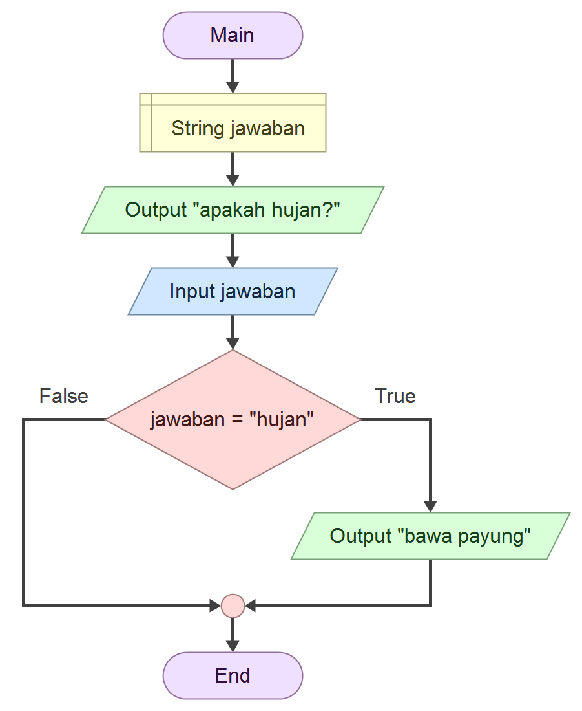
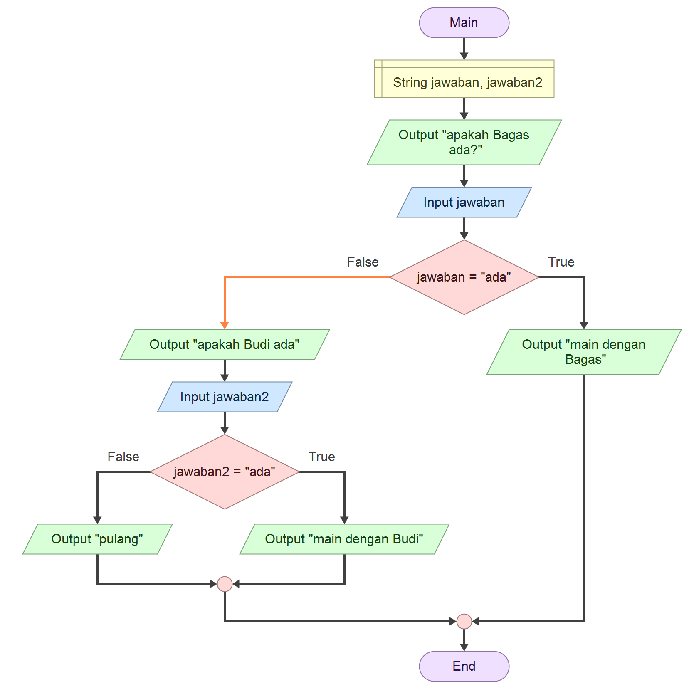
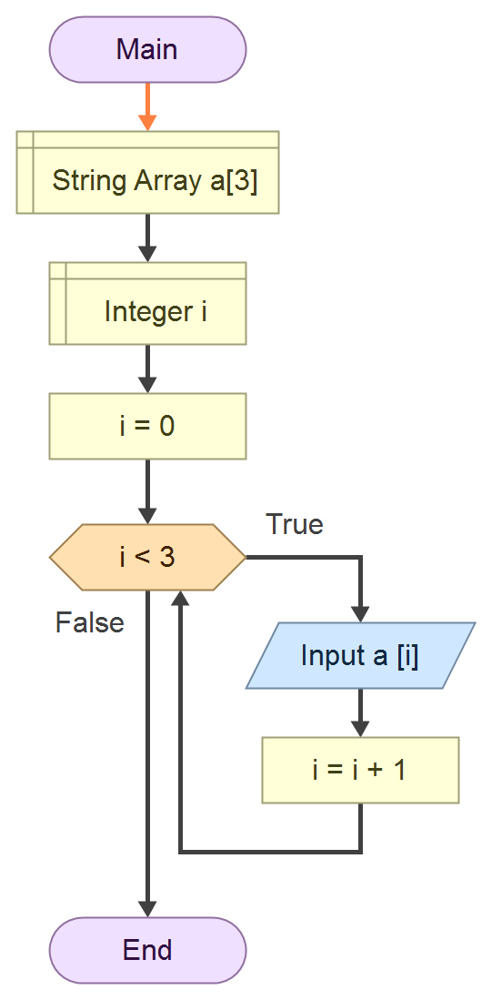

Daftar Isi
Algoritma
Apa itu Algoritma?
- Algoritma adalah serangkaian langkah-langkah logis dan terstruktur untuk menyelesaikan suatu masalah.
- Dalam pemrograman, algoritma adalah "resep" yang memberitahu komputer apa yang harus dilakukan.
Sejarah Algoritma
- Istilah “algoritma” berasal dari nama matematikawan Persia, Muhammad Ibnu Musa Al-Khwarizmi (sekitar 780–850 M).
- Karyanya menjadi dasar bagi pengembangan aljabar dan konsep algoritma dalam komputasi modern.
Analogi Algoritma
- Ada masalah →
- Buat algoritma (langkah-langkah solusi) →
- Ubah algoritma jadi program komputer
- Maka tercipta solusi nyata
Algoritma dibuat untuk menyelesaikan masalah, bukan menciptakan masalah baru.
Contoh Analogi
Bayangkan algoritma seperti resep masakan:
- **Masalah:** Lapar, ingin makan nasi goreng.
- **Algoritma (Resep):**
- Siapkan bahan (nasi, bumbu, telur).
- Panaskan minyak.
- Masukkan bumbu, tumis.
- Masukkan nasi, aduk rata.
- Tambahkan telur, aduk.
- Sajikan.
- **Program Komputer:** Kamu yang "memasak" nasi goreng mengikuti resep tersebut.
- **Solusi:** Nasi goreng siap disantap!
Cara Mengubah Masalah ke Program
- **Identifikasi Masalah:** Pahami kebutuhan dan tujuan program.
- **Rancang Algoritma:** Buat langkah-langkah logis penyelesaian masalah.
- **Pilih Bahasa Pemrograman:** Tentukan bahasa yang sesuai (misal: Python untuk data, JavaScript untuk web).
- **Tulis Kode:** Terjemahkan algoritma ke dalam sintaks bahasa pemrograman.
- **Uji & Debug:** Pastikan program berjalan sesuai harapan.
Notasi Algoritma
Algoritma dapat direpresentasikan dalam beberapa bentuk:
- **Kalimat Deskriptif:** Menggunakan bahasa sehari-hari.
- **Flowchart:** Menggunakan simbol grafis.
- **Pseudocode:** Mirip kode program, tapi tidak terikat sintaks bahasa tertentu.
Kalimat Deskriptif
Apa itu Kalimat Deskriptif?
- Cara menuliskan instruksi algoritma dalam bentuk untaian kalimat.
- Ditulis dalam bahasa yang jelas, baku, dan mudah dipahami.
- Mirip dengan langkah-langkah dalam resep atau panduan.
Contoh: Menghitung Luas Persegi Panjang
Langkah-langkah:
- Mulai.
- Baca nilai panjang.
- Baca nilai lebar.
- Hitung luas dengan rumus: panjang dikali lebar.
- Tampilkan hasil luas.
- Selesai.
üìå **Catatan:** Urutan langkah harus logis. Misalnya, jangan tampilkan hasil sebelum nilai input dimasukkan.
Pentingnya Bahasa Baku
Gunakan bahasa yang formal dan konsisten untuk menghindari ambiguitas.
- ✅ "Masukkan nilai panjang."
- ❌ "Masukin panjangnya."
Tujuannya agar algoritma lebih terstruktur dan profesional.
Flowchart
Apa itu Flowchart?
- Flowchart adalah representasi visual dari algoritma menggunakan simbol-simbol standar.
- Mempermudah pemahaman alur logika program.
- Setiap simbol memiliki makna dan fungsi spesifik.
Simbol-Simbol Dasar Flowchart
| Simbol | Nama | Fungsi |
|---|---|---|
| Oval | Terminator | Mulai/Selesai (Start/End) |
| Panah | Garis Alir | Menunjukkan arah aliran proses |
| Segienam Horizontal | Preparation | Menyatakan deklarasi/variabel awal |
| Jajar Genjang | Input/Output | Memasukkan atau menampilkan data |
| Persegi Panjang | Proses | Operasi atau perhitungan |
Ini hanya sebagian simbol dasar. Ada banyak simbol lain untuk kasus yang lebih kompleks.
Contoh Flowchart: Menghitung Luas Persegi Panjang
Urutan logika dalam flowchart:
- **Start** (Terminator)
- **Input** Panjang (Jajar Genjang)
- **Input** Lebar (Jajar Genjang)
- **Proses:** Hitung Luas = Panjang * Lebar (Persegi Panjang)
- **Output** Luas (Jajar Genjang)
- **End** (Terminator)
üîç **Penjelasan Variabel:**
Variabel adalah "wadah" di memori komputer untuk menyimpan nilai. Sebelum digunakan, variabel perlu dideklarasikan (disiapkan wadahnya).
// Pseudocode sederhana untuk ilustrasi
DECLARE panjang, lebar, luas AS INTEGER
INPUT panjang
INPUT lebar
SET luas = panjang * lebar
DISPLAY luasTips Membuat Flowchart
- Gunakan simbol yang benar sesuai fungsinya.
- Pastikan alur logis dan mudah diikuti.
- Gunakan bahasa yang konsisten dan jelas di setiap simbol.
- Setiap flowchart harus memiliki satu titik mulai dan satu titik selesai.
Pseudocode
Apa itu Pseudocode?
- Pseudocode adalah deskripsi algoritma yang menyerupai kode program.
- Menggunakan bahasa yang sederhana (seringkali Inggris) tanpa terikat sintaks bahasa pemrograman tertentu.
- Fokus pada logika, bukan detail implementasi.
Ciri-ciri Pseudocode
- Menggunakan kata kunci umum seperti START, END, READ, WRITE, IF, ELSE, WHILE, FOR.
- Tidak memiliki standar baku yang ketat, namun harus konsisten.
- Mudah diterjemahkan ke berbagai bahasa pemrograman.
Contoh Pseudocode: Luas Persegi Panjang
Berikut adalah contoh pseudocode untuk menghitung luas persegi panjang:
START
// Deklarasi variabel
DECLARE panjang AS INTEGER
DECLARE lebar AS INTEGER
DECLARE luas AS INTEGER
// Input nilai dari pengguna
READ panjang
READ lebar
// Proses perhitungan
SET luas = panjang * lebar
// Tampilkan hasil
PRINT luas
ENDPerbandingan Notasi Algoritma
| Aspek | Kalimat Deskriptif | Flowchart | Pseudocode |
|---|---|---|---|
| Bentuk | Untaian kalimat | Diagram/simbol grafis | Mirip kode program |
| Target Audiens | Non-programmer, awam | Visual thinker, desainer sistem | Programmer, tim IT |
| Kelebihan | Sangat mudah dimengerti | Visual, mudah melihat alur | Mendekati kode nyata, mudah diimplementasi |
| Kekurangan | Kurang terstruktur untuk kompleksitas | Membutuhkan alat gambar, sulit untuk algoritma besar | Bisa rancu jika tidak konsisten |
Kapan Menggunakan Setiap Notasi?
- **Kalimat Deskriptif:** Untuk menjelaskan konsep dasar kepada non-teknis.
- **Flowchart:** Untuk memvisualisasikan alur kompleks atau presentasi.
- **Pseudocode:** Untuk merancang logika program sebelum menulis kode asli, atau berkomunikasi antar programmer.
üí° **Penting:** Pilih notasi yang paling sesuai dengan audiens dan kompleksitas masalah.
Variabel dan Konstanta
Definisi
- **Variabel:** Sebuah "wadah" di memori komputer yang nilainya dapat berubah selama program berjalan.
- **Konstanta:** Sebuah "wadah" di memori komputer yang nilainya tetap dan tidak dapat diubah setelah ditetapkan.
üìå **Contoh:**
Rumus luas lingkaran:
- Nilai (pi) adalah **konstanta** (sekitar 3.14159).
- Nilai (jari-jari) adalah **variabel** karena bisa berubah tergantung lingkaran yang dihitung.
Konsep Penting
- **Penyimpanan Sementara:** Data variabel/konstanta disimpan di RAM dan akan hilang saat program berakhir.
- **Nilai Variabel Fleksibel:** Nilai variabel dapat diubah berkali-kali.
- **Nilai Konstanta Tetap:** Nilai konstanta tidak bisa diubah setelah diinisialisasi.
- **Satu Data per Wadah:** Setiap variabel/konstanta hanya menyimpan satu nilai pada satu waktu.
- **Nilai Terakhir Berlaku:** Jika variabel diberi nilai berulang, hanya nilai terakhir yang akan digunakan.
x = 10 x = 5 x = 50 // Nilai x sekarang adalah 50
Aturan Penulisan Nama
- Dimulai dengan huruf (A-Z, a-z). Tidak boleh angka atau simbol.
- Bersifat *case-sensitive* (misal: nama dan Nama adalah berbeda).
- Hanya boleh mengandung huruf, angka, dan garis bawah (_).
- Tidak boleh mengandung spasi. Gunakan underscore_case atau camelCase.
- Sebaiknya deskriptif (misal: totalHarga lebih baik dari th).
Notasi Pseudocode
- **Konstanta:** CONSTANT NAMA_KONSTANTA = Nilai
- **Variabel:** DECLARE namaVariabel = NilaiAwal
Contoh:
CONSTANT PI = 3.14159
DECLARE radius = 7Tipe Data dalam Pemrograman
Apa itu Tipe Data?
Tipe data adalah klasifikasi yang menentukan jenis nilai yang dapat disimpan oleh suatu variabel. Penting untuk:
- Mengoptimalkan penggunaan memori.
- Memastikan operasi yang benar pada data.
- Mencegah kesalahan program.
Jenis-Jenis Tipe Data Utama
| Jenis | Contoh | Keterangan |
|---|---|---|
| **Integer** (Bilangan Bulat) | 5, -10, 2000 | Angka tanpa desimal. |
| **Float/Double** (Bilangan Pecahan) | 3.14, -0.75 | Angka dengan desimal. Double memiliki akurasi lebih tinggi. |
| **Char** (Karakter) | 'A', '7', '@' | Satu karakter tunggal. |
| **String** (Teks) | "Halo Dunia", "Nama Saya" | Kumpulan karakter (teks). |
| **Boolean** (Logika) | true, false | Hanya memiliki dua nilai: benar atau salah. |
Tipe Data Bilangan Bulat (Integer)
| Type | Ukuran Bit | Jangkauan |
|---|---|---|
| byte | 8-bit | -128 hingga 127 |
| short | 16-bit | -32.768 hingga 32.767 |
| int | 32-bit | -2.147.483.648 hingga 2.147.483.647 |
| long | 64-bit | Nilai sangat besar (miliaran++) |
Tipe Data Bilangan Pecahan (Float/Double)
| Type | Ukuran Bit | Keterangan |
|---|---|---|
| float | 32-bit | Akurasi sedang |
| double | 64-bit | Akurasi tinggi |
Tipe Data Karakter & Teks (Char)
| Type | Keterangan |
|---|---|
| char | Menyimpan satu karakter/simbol saja ('A') |
| String | Menyimpan banyak karakter ("Halo") |
Tipe Data Boolean
| Type | Keterangan |
|---|---|
| boolean | true atau false |
Mengapa Tipe Data Penting?
- **Efisiensi Memori:** Memilih tipe data yang tepat menghemat ruang memori.
- **Validasi Data:** Memastikan data yang disimpan sesuai dengan yang diharapkan.
- **Operasi yang Benar:** Mencegah kesalahan saat melakukan operasi (misal: tidak bisa mengalikan teks).
- **Keterbacaan Kode:** Membuat kode lebih mudah dipahami.
Operator
Definisi Operator
Operator adalah simbol-simbol khusus yang digunakan untuk melakukan operasi pada nilai (operand) dalam program.
Jenis-Jenis Operator
1. Operator Penugasan (Assignment Operator)
- Simbol: =
- Fungsi: Memberikan nilai ke variabel.
- Contoh: umur = 25 (variabel umur diisi nilai 25).
- üìå **Catatan:** = bukan "sama dengan" matematis, melainkan "diisi dengan".
2. Operator Aritmatika (Arithmetic Operator)
Digunakan untuk perhitungan matematis.
| Operasi | Simbol | Contoh |
|---|---|---|
| Penjumlahan | + | a + b |
| Pengurangan | - | a - b |
| Perkalian | * | a * b |
| Pembagian | / | a / b |
| Modulus (Sisa Bagi) | % | a % b |
3. Operator Perbandingan (Comparison Operator)
Membandingkan dua nilai dan menghasilkan true atau false.
| Operasi | Simbol | Contoh |
|---|---|---|
| Sama Dengan | == | a == b |
| Tidak Sama Dengan | != | a != b |
| Lebih Besar Dari | > | a > b |
| Kurang Dari | < | a < b |
| Lebih Besar Sama Dengan | >= | a >= b |
| Kurang Dari Sama Dengan | <= | a <= b |
4. Operator Logika (Logical Operator)
Menggabungkan atau memanipulasi nilai boolean.
| Operasi | Simbol | Keterangan |
|---|---|---|
| AND | && | true jika semua kondisi true. |
| OR | || | true jika salah satu atau kedua kondisi true. |
| NOT | ! | Membalik nilai boolean (true jadi false, sebaliknya). |
Tabel Kebenaran (Logical AND, OR, NOT)
| A | B | A && B | A || B | !A |
|---|---|---|---|---|
| True | True | True | True | False |
| True | False | False | True | False |
| False | True | False | True | True |
| False | False | False | False | True |
Logika Percabangan (Conditional Statement)
Apa itu Logika Percabangan?
Logika percabangan digunakan untuk menjalankan perintah tertentu berdasarkan kondisi. Jika kondisi bernilai benar (true), maka perintah akan dijalankan.
üí° **Analogi:** "Jika hujan, bawa payung. Jika tidak, bawa kacamata hitam."
Contoh Dalam simbol flowchart (dessicion)
Contoh Kasus: Penerimaan Karyawan
Syarat:
- Umur ≥ 17 tahun
- Jenis kelamin = Laki-laki / Perempuan (L || P)
- Pendidikan ≥ SLTA
üìå Contoh Inputan Kemampuan :
| Kondisi | Hasil |
|---|---|
| Umur = 17 tahun | Lolos syarat umur |
| Jenis kelamin = L | Lolos syarat gender |
| Pendidikan = SLTP | ❌ Tidak lolos pendidikan |
üìå Kondisi dengan Operator AND (&&)
Semua syarat harus terpenuhi
| Kondisi | Hasil |
|---|---|
| Umur = 17 tahun | Lolos syarat umur |
| Jenis kelamin = L | Lolos syarat gender |
| Pendidikan = SLTP | ❌ Tidak lolos pendidikan |
Hasil (AND): ❌ Tidak lolos, karena satu saja tidak terpenuhi (pendidikan).
üìå Kondisi dengan Operator OR (||)
Cukup satu syarat yang terpenuhi agar hasilnya true
| Kondisi | Hasil |
|---|---|
| Umur = 17 tahun | Lolos syarat umur |
| Jenis kelamin = L | Lolos syarat gender |
| Pendidikan = SLTP | ❌ Tidak lolos pendidikan |
Hasil (OR): ✅ Lolos, karena ada dua syarat yang terpenuhi.
Jenis-Jenis Percabangan
| Jenis | Keterangan |
|---|---|
| **IF Tunggal** | Satu kondisi, satu aksi jika benar. |
| **IF-ELSE** | Dua kemungkinan aksi (jika benar lakukan A, jika salah lakukan B). |
| **IF-ELSE IF-ELSE** | Banyak kondisi berurutan. |
| **SWITCH CASE** | Memilih aksi berdasarkan nilai pasti dari satu variabel. |
I. IF Tunggal
Hanya menjalankan aksi jika kondisi bernilai true. Jika false, tidak ada yang terjadi.
Urutan logika dalam flowchart:
Visualisasi Flowchart:
DECLARE hujan AS Boolean
IF hujan == TRUE THEN
DISPLAY "Bawa payung"
ENDIFII. IF-ELSE (Ganda)
Menjalankan satu aksi jika kondisi true, dan aksi lain jika kondisi false.
Urutan logika dalam flowchart:
Visualisasi Flowchart:
DECLARE hujan AS Boolean
IF hujan == TRUE THEN
DISPLAY "Bawa payung"
ELSE
DISPLAY "pakai kacamata"
ENDIFIII. IF-ELSE IF-ELSE (Majemuk)
Digunakan untuk menangani lebih dari dua kondisi. Pengecekan dilakukan berurutan.
Urutan logika dalam flowchart:
Visualisasi Flowchart:
DECLARE Bagas,Budi AS Boolean
IF Bagas_ADA THEN
DISPLAY "main dengan Bagas"
ELSE
IF Budi_ADA THEN
DISPLAY "main dengan Budi"
ELSE
DISPLAY "pulang"
ENDIF
ENDIFIV. SWITCH CASE
Memilih blok kode untuk dieksekusi berdasarkan nilai pasti dari suatu variabel.
SWITCH (variabel)
CASE nilai1:
// Aksi untuk nilai1
BREAK
CASE nilai2:
// Aksi untuk nilai2
BREAK
DEFAULT:
// Aksi jika tidak ada nilai yang cocok
END SWITCH**Contoh:** Menampilkan nama hari berdasarkan angka (1=Senin, 2=Selasa, dst.).
Perbedaan IF vs SWITCH CASE
| Aspek | IF | SWITCH CASE |
|---|---|---|
| Jenis Kondisi | Fleksibel (perbandingan, logika kompleks, range nilai) | Nilai pasti (konstan) dari satu variabel |
| Keterbacaan | Bisa panjang dan rumit jika banyak kondisi | Lebih rapi untuk banyak pilihan nilai pasti |
| Penggantian | Tidak selalu bisa diganti SWITCH CASE | Bisa diganti dengan IF-ELSE IF |
üìå **Kesimpulan:** Gunakan IF untuk logika kompleks, SWITCH CASE untuk pilihan berdasarkan nilai tetap.
Logika Perulangan (Looping)
Pengertian Looping
Perulangan (looping) adalah proses mengulang eksekusi satu atau lebih pernyataan (blok kode) secara berulang hingga kondisi tertentu terpenuhi.
üí° **Analogi:** Menghitung 1 sampai 10. Kamu mengulang aksi "menambah satu" sampai mencapai angka 10.
Komponen utama perulangan:
- **Inisialisasi:** Nilai awal variabel kontrol.
- **Kondisi:** Syarat agar perulangan terus berjalan.
- **Iterasi:** Perubahan nilai variabel kontrol (increment/decrement) setiap putaran.
Jenis-Jenis Perulangan
1. For Loop
- **Kapan Digunakan:** Ketika jumlah iterasi (pengulangan) sudah diketahui secara pasti.
- **Struktur Umum:**
FOR (inisialisasi; kondisi; iterasi) DO // Blok kode yang diulang END FOR - **Contoh Pseudocode:** Menampilkan angka 1 sampai 5
FOR i = 1 TO 5 DO PRINT i END FOROutput:
1 2 3 4 5
Visualisasi Flowchart:
2. While Loop
- **Kapan Digunakan:** Ketika jumlah iterasi belum pasti, perulangan akan terus berjalan selama kondisi true.
- **Struktur Umum:**
WHILE kondisi DO // Blok kode yang diulang // Pastikan ada perubahan yang membuat kondisi suatu saat menjadi false END WHILE - **Contoh Pseudocode:** Menampilkan angka 1 sampai 5
DECLARE i = 1 WHILE i <= 5 DO PRINT i i = i + 1 END WHILEOutput:
1 2 3 4 5
Visualisasi Flowchart:
3. Do While Loop
- **Kapan Digunakan:** Mirip WHILE, tetapi blok kode akan dieksekusi minimal satu kali, baru kemudian kondisi dicek.
- **Struktur Umum:**
DO // Blok kode yang diulang // Pastikan ada perubahan yang membuat kondisi suatu saat menjadi false WHILE kondisi - **Contoh Pseudocode:** Menampilkan "Halo" minimal sekali
DECLARE i = 10 DO PRINT "Halo" i = i + 1 WHILE i < 5Output:
HaloPerbedaannya dengan while loop:
- while → kondisi dicek di awal
- do while → kondisi dicek di akhir → jadi pasti dijalankan sekali, walau kondisi awalnya salah.
Visualisasi Flowchart:
Konsep Array dalam Pemrograman
Pengertian
Array adalah tipe data yang digunakan untuk menyimpan kumpulan elemen (nilai atau variabel) dalam satu variabel tunggal, di mana setiap elemen memiliki index (posisi).
Kenapa Menggunakan Array?
1. Manajemen Memori
- Sebelum array:
binatang1 = "ayam" binatang2 = "sapi" binatang3 = "kambing" - Dengan array:
binatang = ["ayam", "sapi", "kambing"] - ✅ Lebih hemat, efisien, dan mudah dikelola.
2. Mempermudah Pengelolaan Data
- Anggap array seperti lemari dengan banyak laci. Tiap laci punya nomor (index), dan isinya bisa kamu ambil atau ganti dengan cepat.
Sifat-Sifat Array
1. ✅ Variabel Jamak dengan Nama yang Sama
- Semua elemen diakses lewat satu nama, dibedakan lewat indeks.
- üìå Contoh (java):
int[] angka = {10, 20, 30}; System.out.println(angka[0]); // Output: 10 System.out.println(angka[1]); // Output: 20
2. üîë Pasangan Key dan Value (Key-Value Pair)
- Di array biasa (list), index adalah angka urut otomatis.
- Dalam array yang berbentuk dictionary (Python), key bisa ditentukan sendiri.
- üìå Contoh:
hewan = {"a": "ayam", "s": "sapi", "k": "kambing"} print(hewan["s"]) # Output: sapi
3. üîÑ Bisa Menyimpan Tipe Data Berbeda (di bahasa tertentu seperti Python)
- üìå Contoh:
campuran = ["apel", 123, True, 45.6] print(campuran[2]) # Output: True - Di bahasa seperti Java, C, C++, semua elemen array harus satu jenis (homogen).
- üìå Contoh java:
Object[] campuran = {"apel", 123, true, 45.6}; System.out.println(campuran[2]); // Output: True
4. üìö Array Bersarang (Array di dalam Array)
- Array yang elemen-elemennya juga berupa array.
- üìå Contoh:
data = [ ["apel", "jeruk"], ["ayam", "bebek"] ] print(data[1][0]) # Output: ayam - üìå Contoh java:
String[][] data = { {"apel", "jeruk"}, {"ayam", "bebek"} }; System.out.println(data[1][0]); // Output: ayam
Contoh Flowchart Array Sederhana
Tujuan: Menyimpan dan menampilkan isi array
Start
↓
Deklarasi array[3]
↓
Input array[0]
Input array[1]
Input array[2]
↓
Output array[0]
Output array[1]
Output array[2]
↓
EndContoh Flowchart Array dengan loop
Visualisasi Flowchart:
Tujuan: Menyimpan dan menampilkan isi array
Start
↓
Deklarasi array[3] As String
↓
Deklarasi i As Integer
↓
i = 0
↓
[Loop Input]
Apakah i < 3?
→ Ya → Input array[i], i = i + 1 → Kembali ke [Loop Input]
→ Tidak → Lanjut ke [Loop Output]
↓
i = 0
↓
[Loop Output]
Apakah i < 3?
→ Ya → Output array[i], i = i + 1 → Kembali ke [Loop Output]
→ Tidak → EndPseudocode Array
DECLARE buah[3] AS STRING
FOR i = 0 TO 2
INPUT buah[i]
END FOR
FOR i = 0 TO 2
DISPLAY buah[i]
END FORcode dalam java
Cara Membuat Array Bersarang
üìå Contoh Python:
siswa = [
["Adit", 90],
["Budi", 85],
["Cici", 95]
]
print(siswa[0][0]) # Output: Adit
print(siswa[2][1]) # Output: 95üìå Contoh java:
String[] nama = {"Adit", "Budi", "Cici"};
int[] nilai = {90, 85, 95};
System.out.println(nama[0]); // Output: Adit
System.out.println(nilai[2]); // Output: 95Konsep Function dalam Pemrograman
Apa itu Function?
Function adalah program kecil atau blok kode terpisah dalam program utama yang bisa dipanggil kapan saja. Function dapat memiliki input (parameter) dan dapat mengembalikan output (return value).
Analogi Function
Function itu seperti mesin atau alat:
- Kita masukkan bahan (input),
- Mesin memprosesnya (logic),
- Lalu menghasilkan sesuatu (output).
Contoh:
- Mesin kopi:
- Input: air + bubuk kopi
- Output: kopi panas
- Function:
def tambah(a, b): return a + b
Karakteristik Function
- üîπ Program kecil yang berdiri sendiri dalam program utama.
- üîπ Bisa menerima input (argumen/parameter).
- üîπ Bisa menghasilkan output (return).
- üîπ Output function bisa menjadi input untuk function lain.
- üîπ Wajib dibuat dulu sebelum dipanggil.
Manfaat Function
- ✅ Reusability – Bisa dipakai berulang-ulang di bagian lain program.
- ✅ Manajemen Memori – Fungsi dipanggil hanya saat dibutuhkan.
- ✅ Efisiensi Kode – Tidak perlu menulis kode yang sama berulang-ulang.
- ✅ Mudah Dipahami – Kode terstruktur dan jelas bagi programmer lain.
Kategori Function
1. Built-in Function (fungsi bawaan)
- Sudah disediakan oleh bahasa pemrograman.
- Tinggal dipakai.
- üìå Contoh (Python):
print("Halo") len("abc") # menghitung jumlah karakter string, hasil: 3 - üìå Contoh (Java):
String teks = "Halo"; System.out.println(teks.length()); // menghitung jumlah karakter string, hasil: 3
2. User-Defined Function (fungsi buatan sendiri)
- Dibuat oleh programmer sendiri sesuai kebutuhan.
- üìå Contoh (Python):
def luas_persegi(sisi): return sisi * sisi # Pemanggilan fungsi hasil = luas_persegi(5) print("Luas persegi:", hasil) # Output: 25 - üìå Contoh (Java):
public class FungsiLuasPersegi { // Fungsi user-defined public static int luasPersegi(int sisi) { return sisi * sisi; } public static void main(String[] args) { // Memanggil fungsi dan menyimpan hasilnya int hasil = luasPersegi(5); // Menampilkan hasil System.out.println("Luas persegi: " + hasil); print("Luas persegi:", hasil) // Output: 25 } }
Pseudocode Membuat Function
FUNCTION namaFunction(parameter1, parameter2)
DEKLARASI variabel
LAKUKAN proses
RETURN nilai
END FUNCTION
PROGRAM UTAMA
PANGGIL namaFunction(dengan_argumen)
END PROGRAMüìå Contoh Pseudocode:
FUNCTION Tambah(a, b)
RETURN a + b
END FUNCTION
PROGRAM UTAMA
HASIL ← Tambah(4, 5)
DISPLAY HASIL
END PROGRAMFlowchart Function Sederhana
Tujuan: Membuat fungsi untuk menjumlahkan 2 angka
+--------------------+
| Start |
+--------------------+
|
v
+--------------------+
| Input A, B |
+--------------------+
|
v
+--------------------+
| Call Function |
| Jumlahkan(A, B) |
+--------------------+
|
v
+--------------------+
| Output Hasil |
+--------------------+
|
v
+--------------------+
| End |
+--------------------+Visualisasi Flowchart:
üìå Di dalam function Jumlahkan(A, B):
- Proses: C = A + B
- Return: C
Parameter dan Argumen dalam Pemrograman
üìå Pengertian:
- Parameter: Variabel yang ditulis di dalam tanda kurung () saat sebuah fungsi (function/procedure) dibuat. Fungsinya untuk menampung nilai yang akan dikirim saat fungsi itu dipanggil.
- Argumen: Nilai yang dikirimkan ke fungsi saat fungsi tersebut dipanggil. Nilai ini nantinya diterima oleh parameter untuk digunakan dalam proses di dalam fungsi.
üîç Analogi Sederhana (Mesin Jagung):
Bayangkan kita punya mesin pengolah jagung.
- Parameter = Lubang input mesin
Mesin butuh input jagung untuk diproses. Lubang ini bisa diibaratkan sebagai parameter. - Argumen = Jagung yang dimasukkan ke mesin
Jagung yang kita masukkan ke dalam lubang adalah argumen. Mesin tidak bisa bekerja jika tidak diberi jagung.
➡️ Jadi: Fungsi = Mesin, Parameter = Lubang masuk, Argumen = Jagung yang dimasukkan
ü߆ Contoh Pseudocode:
// DECLARE
DECLARE integer x,y
// WRITE FUNCTION (User Defined Function)
Function name (x,y)
RETURN x*y
Endfunction
// CALL FUNCTION
CALL : name (10,2)
DISPLAY (call : name (10,2))üìù Keterangan:
x,yadalah parameter10,2adalah argumen
üîÅ Contoh Flowchart (Deskripsi Teks)
Judul: Fungsi dengan Parameter
- Start
- Deklarasi x,y
- Baca x,y
- Kembali x*y
- End
✅ Kesimpulan
- Parameter = Tempat menerima data saat fungsi dibuat
- Argumen = Nilai yang dikirim saat fungsi dipanggil
- Pemisahan ini membantu fungsi agar bisa digunakan ulang dengan data yang berbeda-beda